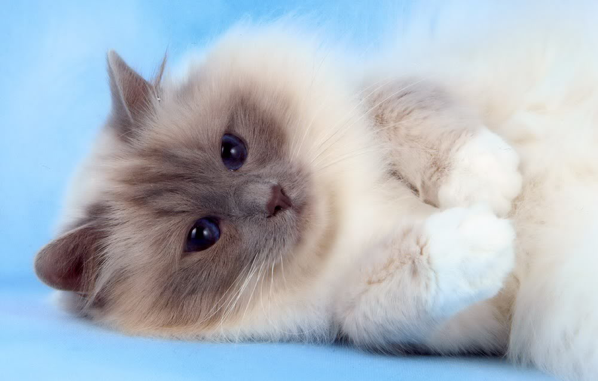
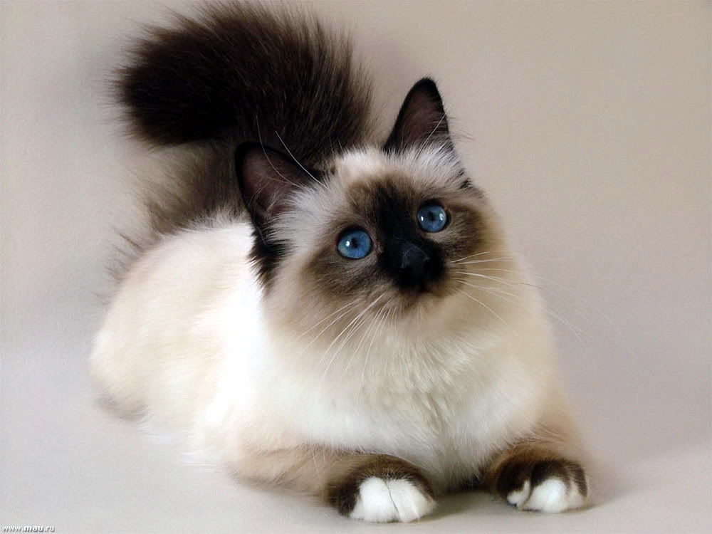

Không giống như những giống mèo khác đã được CFA công nhận, nguồn gốc của mèo Birman, cho đến nay vẫn rất huyền bí – như chính bản thân của chúng vậy. Ta hầu như không thể tìm thấy tư liệu chính xác nào về giống mèo này. Tuy nhiên, màu lông đặc biệt của chúng lại là nguồn cảm hứng cho nhiều câu chuyện kỳ bí và quyến rũ. Mèo Birman còn được gọi là Mèo thần Miến Điện – bắt nguồn từ truyền thuyết chú mèo Sinh canh giữ Miếu Lao Tsun.
Mèo Birman có kích cỡ trung bình và hình thể rất cân đối. Đặc điểm nổi bật của chúng là có những “điểm nhấn” trên người, nghĩa là phần mặt, tai, chân, bàn chân và đuôi sẽ có màu sắc tối hơn so với phần còn lại. Giống mèo này có lớp lông dài, dày, mượt mà và đôi mắt xanh lam rất sáng. Một con mèo Birman thuần chủng lý tưởng sẽ có gương mặt tròn, chiếc mũi kiểu La Mã, tai dựng cao trên đầu, móng trắng, đệm chân đặc biệt trắng hồng và quanh chúng sẽ có một lớp lông mềm phủ xuống – nhìn như đang đi tất chân vậy.
Giống mèo này thiên tính ngoan hiền, yên tĩnh và dịu dàng. Tuy nhiên chúng cũng có thể rất tò mò, thích tìm hiểu những thứ mới lạ, hay những thứ mà chủ nuôi đang làm. Mèo Birman còn rất thông minh, thân thiện, tình cảm và gắn bó với loài người. Nếu bạn là chủ của nó, nó sẽ rất trung thành và thích quanh quẩn bên bạn.